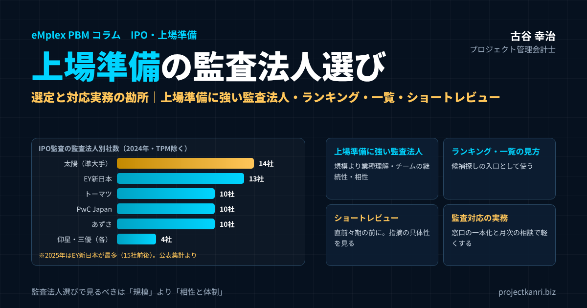

上場準備における監査法人選定と対応実務の勘所―上場準備に強い監査法人の選び方、監査法人ランキング・一覧の見方、ショートレビューから監査対応まで

結論：監査法人選びで見るべきは「規模」より「相性と体制」
この記事の要点
- 上場準備と監査法人：直前々期・直前期の2期間の監査が必要。直前々期の開始前に監査契約を
- 監査法人ランキング：2024年は太陽が最多、2025年はEY新日本が最多。中小のシェアも上昇
- 上場準備に強い監査法人：社数より「業種理解・担当チームの継続性・相性」で選ぶ
- ショートレビュー：指摘の数より、具体的で実行可能な改善提案かどうかを見る
- 対応実務：監査対応チームを先に編成し、月次で相談できる関係を設計する
プロジェクト管理会計士の古谷です。今回は、上場準備の最初の関門の一つである、監査法人の選定と、その後の監査対応の実務を取り上げます。
上場準備において、監査法人の選定は、単にブランド力で決めるべきものではありません。重要なのは、自社の事業規模や業種の特性に見合った監査チームを継続的に配置してもらえるか、そして経営陣と率直に議論できる相性があるかどうかです。大手の監査法人であっても、上場準備企業向けの体制が手薄であれば、監査対応そのものが上場準備のボトルネックになりかねません。
私は、エンプレックスでCFOとして上場準備に携わり、その後ホリプロでは上場会社の経営企画として開示業務やグループ経営管理に携わりました。独立してからも、上場を目指す多くの会社の経営管理の体制づくりを支援してきました。その中で痛感してきたのは、監査法人との関係の良し悪しが、上場準備のスピードと質を大きく左右するということです。
本稿では、上場準備で監査法人が果たす役割とスケジュールを確認したうえで、IPO監査の監査法人ランキングの見方、大手・準大手・中小の監査法人の違い、上場準備に強い監査法人の探し方と見極め方、ショートレビューの受け方、そして監査契約後の対応実務までを、順を追ってお伝えします。最後に、私の専門であるプロジェクト型ビジネスに特有の監査上の論点にも触れます。
上場準備の会社の経営者からよく受ける質問に、「上場準備に強い監査法人はどこですか」「監査法人のランキングや一覧はありますか」というものがあります。結論から言えば、ランキングや一覧は候補を探すうえで役に立ちますが、それだけで選ぶべきではありません。本稿では、ランキングや一覧の正しい使い方も含めてお伝えします。
上場準備で監査法人が果たす役割：2期間の監査と、体制づくりへの助言
まず、上場準備において、なぜ監査法人が必要なのかを確認しておきます。
東京証券取引所のグロース市場やスタンダード市場、プライム市場に上場するには、上場申請の書類に含まれる財務諸表について、金融商品取引法に準ずる監査を受けていることが求められます。対象となるのは、上場申請の直前期以前の二年間、つまり直前々期と直前期の二期間です。この二期間の監査を行うのが、監査法人です。
監査法人の役割は、財務諸表の監査だけではありません。上場準備の会社の多くは、会計の処理や内部の管理の体制が、上場会社に求められる水準に達していません。監査法人は、監査契約の前に行うショートレビューで課題を洗い出し、その後の監査の過程でも、会計の処理や内部統制について指摘や助言を行います。
ただし、ここで理解しておきたいのは、監査法人は独立した立場で財務諸表の適正性を確かめる存在であり、会社の代わりに体制を作ってくれる存在ではないということです。監査法人は、自らが監査する対象の書類を自ら作ることはできません。課題を指摘し、考え方を助言することはできても、規程を作り、業務の流れを整え、決算を締めるのは、あくまで会社自身の仕事です。この役割の線引きを理解しておくことが、監査法人との良い関係の出発点になります。
なお、上場会社の監査を行う監査事務所には、日本公認会計士協会への登録が求められる「上場会社等監査人登録制度」があります。上場を目指す会社が監査法人を選ぶ際には、その監査事務所が登録を受けているかどうかも確認しておく必要があります。
監査法人・主幹事証券会社・証券取引所の役割の違い
上場準備では、監査法人のほかに、主幹事の証券会社、証券取引所といった関係者とも向き合うことになります。それぞれの役割を混同しないよう、整理しておきます。
| 関係者 | 主な役割 | 主に見ている観点 |
|---|---|---|
| 監査法人 | 財務諸表の監査（直前々期・直前期）、ショートレビュー | 会計処理の妥当性、内部統制 |
| 主幹事証券会社 | 上場準備の指導、引受審査、公開価格の決定 | 事業計画、管理体制、上場適格性 |
| 証券取引所 | 上場審査、上場の承認 | 上場基準への適合、企業の継続性・健全性 |
| 会社（経営陣） | 体制の整備と運用、書類の作成 | 上場会社としての経営管理の実現 |
監査法人は、財務諸表が適正かどうかを、会計の専門家として独立した立場で確かめます。主幹事の証券会社は、上場の準備全体を指導し、引受審査を通じて、会社が上場にふさわしいかを審査します。証券取引所は、上場審査を行い、最終的に上場を承認します。
三者の関心は重なる部分もありますが、見ている観点は異なります。たとえば、事業計画の合理性は主に証券会社と取引所が、会計処理の妥当性は主に監査法人が確かめます。監査法人の選定にあたっては、主幹事の証券会社とも相談し、三者が連携しやすい体制をつくることが大切です。
上場準備のスケジュールと監査法人：いつ、何をするのか
上場準備のスケジュールの中で、監査法人とどの時期に、何をするのかを整理します。上場申請を行う期を申請期とし、その前の期を直前期、さらにその前を直前々期と呼びます。
| 時期 | 監査法人との主な関わり | 会社側の主な準備 |
|---|---|---|
| 直前々期より前（N-3期以前） | 監査法人への相談・面談、ショートレビュー | 上場の意思決定、主幹事証券の検討、課題の洗い出し |
| 直前々期の開始前 | 監査契約の締結 | ショートレビューの指摘への対応計画、管理体制の整備 |
| 直前々期（N-2期） | 期首残高の監査、1期目の監査 | 規程・業務の整備、月次決算の早期化、予算管理 |
| 直前期（N-1期） | 2期目の監査、内部統制の確認 | 上場申請書類の準備、運用実績の積み上げ |
| 申請期（N期） | 上場申請時の監査証明、審査対応への協力 | 取引所・証券会社の審査対応 |
市場や会社の状況によって前後します。
最も大切なのは、監査の対象となる直前々期が始まる前に、監査契約を結んでおくことです。直前々期の期首の残高も監査の対象になるため、期が始まってから慌てて監査法人を探しても、間に合わないことがあります。そこから逆算すると、ショートレビューは直前々期よりも前に受けておくのが望ましく、監査法人への相談は、上場の意思が固まった段階で、できるだけ早く始める必要があります。
ショートレビューで見つかった課題によっては、その解消に一年以上かかることもあります。課題を解消してから監査に入る方が、監査の負担も監査報酬も抑えられます。上場準備の全体のスケジュールは、監査法人とのスケジュールを軸に組み立てると考えてください。
近年の監査法人逼迫という構造変化
上場準備企業の増加に対して、監査法人の側の人材の供給が追いついておらず、新規の上場準備の案件を受け入れられない監査法人が増えています。上場を目指しているのに監査を引き受けてくれる監査法人が見つからない、いわゆる「監査難民」という言葉が使われるようになったのも、この構造変化の表れです。
背景には、監査の品質に対する要求の高まりや、監査法人の人手不足、監査のリスクに対する慎重な姿勢などがあります。特に、事業の実態や管理の体制が十分に整っていない会社、急成長していて会計の論点が多い会社、上場までの期間が短い会社は、監査法人の側から見ると、リスクが高く、手間のかかる案件です。そうした会社ほど、受け入れ先を見つけるのに苦労します。
この状況を受けて、金融庁は株式新規上場に係る監査事務所の選任等に関する連絡協議会を設け、日本公認会計士協会も、IPO監査に意欲のある中小の監査事務所の情報の提供など、上場準備の会社と監査事務所を結びつける取り組みを進めてきました。後で述べるように、大手だけでなく、準大手や中小の監査法人が上場準備の会社の監査を担う割合も高まっています。
この構造変化を理解しないまま準備を進めると、いざ監査契約を結ぼうとした段階で受け入れ先が見つからず、スケジュール全体が大きく後ろ倒しになるリスクがあります。監査法人探しは、上場準備の初期の段階から並行して着手すべき論点です。そして、監査法人に「選ばれる」ための準備、つまり、自社の事業と管理の状況を分かりやすく説明できる状態を整えておくことも、同じくらい大切です。
監査法人の受け入れが厳しいからといって、条件の良くない監査法人と焦って契約するのは避けるべきです。体制が整わない監査法人と契約すると、監査の途中で行き詰まり、結果として上場がさらに遅れることもあります。早めに動き、選択肢を確保しておくことが何より大切です。
監査法人に「選ばれる」会社になるための準備
監査法人の受け入れの余力が限られている今、上場準備の会社は、監査法人を選ぶ立場であると同時に、監査法人から選ばれる立場でもあります。監査法人は、受け入れを判断する際に、その会社の事業の実態、経営者の姿勢、管理の体制、会計上のリスクを見ています。
| 資料 | ポイント |
|---|---|
| 会社概要・沿革・組織図 | 事業の全体像と組織の役割分担が分かる |
| 事業内容と収益構造の説明 | 何で、どのように売上と利益を上げているか |
| 過去数期の決算書・月次試算表 | 数字の推移と月次決算の状況 |
| 事業計画 | 上場までと上場後の成長の見通し |
| 主要な規程・契約 | 職務権限、主要取引先との契約 |
| 株主構成・資本政策 | 株主の状況、ストック・オプションなど |
| 想定される会計の論点 | 収益認識、原価計算、引当金などの現状 |
なかでも監査法人が重視するのが、経営者の姿勢です。上場を目指す理由が明確か、コンプライアンスや内部統制の重要性を理解しているか、監査法人の指摘に真摯に向き合う意思があるか。最初の面談で、経営者自身が自分の言葉で事業と上場の目的を語れるかどうかは、監査法人にとって大きな判断材料になります。
また、月次の決算が一定の期日で締まり、予算と実績を比べる管理ができていることも、監査法人に安心感を与えます。完璧である必要はありませんが、少なくとも、自社の数字の現状と課題を把握し、それを説明できる状態にしておくことが、受け入れの可能性を高めます。
監査法人に選ばれる準備は、そのまま上場準備そのものの前進でもあります。事業と数字を説明できる状態を整えることは、主幹事の証券会社や証券取引所の審査への備えにもなるからです。
上場準備の監査法人ランキング：IPO監査の社数とシェアをどう読むか
上場準備の会社が監査法人を選ぶ際に、多くの方が参考にするのが、IPO監査の社数のランキングです。公表されている集計によれば、近年の新規上場会社（TOKYO PRO Marketを除く）の監査を担当した監査法人は、次のようになっています。
| 順位 | 監査法人 | 社数 | シェア |
|---|---|---|---|
| 1 | 太陽有限責任監査法人（準大手） | 14 | 16.3% |
| 2 | EY新日本有限責任監査法人（大手） | 13 | 15.1% |
| 3 | 有限責任監査法人トーマツ（大手） | 10 | 11.6% |
| 3 | PwC Japan有限責任監査法人（大手） | 10 | 11.6% |
| 3 | 有限責任あずさ監査法人（大手） | 10 | 11.6% |
| 6 | 仰星監査法人 | 4 | 4.7% |
| 6 | 三優監査法人 | 4 | 4.7% |
| 8 | ESネクスト有限責任監査法人 | 3 | 3.5% |
| 8 | FRIQ監査法人 | 3 | 3.5% |
公表されている集計をもとに作成。2社以下の監査法人は省略。大手4法人の合計シェアは50.0%、中小監査法人は23.3%。
二〇二四年は、準大手の太陽有限責任監査法人が担当社数で最も多く、大手四法人がそれに続きました。大手四法人のシェアは合わせて五割で、前の年より下がる一方、中小の監査法人のシェアが高まっています。
二〇二五年については、集計の時点や基準によって数字に多少の違いがありますが、EY新日本有限責任監査法人が十五社前後で最も多く、太陽有限責任監査法人、PwC Japan有限責任監査法人、有限責任監査法人トーマツがそれぞれ六社から七社程度、有限責任あずさ監査法人が二社程度と集計されています。規模別では、大手のシェアが五割を下回り、中小の監査法人のシェアが三割台後半に高まったとする集計もあります。
| 監査法人 | 社数（集計により差あり） |
|---|---|
| EY新日本有限責任監査法人 | 15社前後（最多） |
| 太陽有限責任監査法人 | 7社前後 |
| PwC Japan有限責任監査法人 | 6〜7社 |
| 有限責任監査法人トーマツ | 6社前後 |
| 三優監査法人 | 4社前後 |
| 有限責任あずさ監査法人 | 2社前後 |
2025年の新規上場は65〜66社程度。集計時点・基準（上場承認ベース等）により数字は異なります。
ランキングを見る際には、いくつか注意が必要です。一つ目は、ランキングは、その年に上場した会社の数であり、監査法人の上場準備の支援の力そのものを示すものではないということです。上場までには少なくとも二、三年かかるため、今年のランキングは、数年前の受け入れの方針を反映しています。
二つ目は、市場によって傾向が異なることです。公表されている集計では、プライム市場への新規上場は大手か太陽が担当しており、グロース市場では中小の監査法人の比率が高い傾向が見られます。自社が目指す市場で、どの監査法人がどのような実績を持っているかを見ることが大切です。
三つ目は、ランキングの上位であることと、自社に合っていることは別だということです。後で述べるように、監査法人選びで本当に大切なのは、業種の理解、担当チームの体制と継続性、そして経営陣との相性です。ランキングは、候補を探すための入口として使い、最終的な判断は、実際に会って話をしたうえで行ってください。
なお、上場準備の会社が実際に監査法人を探す時点では、ランキングの上位の監査法人ほど、新規の受け入れに慎重になっていることもあります。上位の監査法人だけに絞らず、準大手や中小の監査法人も含めて、幅広く候補を検討することをお勧めします。
大手・準大手・中小監査法人の違い一覧：自社に合うのはどこか
監査法人は、一般に、大手、準大手、中小の三つに分けて語られます。それぞれの特徴を一覧にまとめます。
| 区分 | 主な特徴 | 向いている会社 | 確認したい点 |
|---|---|---|---|
| 大手（EY新日本・トーマツ・あずさ・PwC Japan） | 人員・専門部署・海外ネットワーク・上場会社の監査実績が豊富 | 規模が大きい会社、プライム市場や海外展開を見据える会社 | 受け入れ基準、報酬水準、担当チームの継続性 |
| 準大手（太陽・三優など） | 大手に次ぐ規模で、IPO監査に積極的な法人も多い | グロース・スタンダード市場を目指す成長企業 | 業種経験、繁忙期の体制 |
| 中小監査法人 | パートナーとの距離が近く、特定の業種・地域に強みを持つ法人も | 経営者と密に議論したい会社、地域の企業 | 人員の余力、担当交代時の対応、上場会社等監査人の登録 |
区分は一般的な分類です。
大手の監査法人は、人員の規模、専門の部署、海外のネットワーク、上場会社の監査の実績のいずれも豊富です。将来、プライム市場への上場や海外への展開を考えている会社、規模の大きな会社にとっては、心強い存在です。一方で、受け入れの基準が厳しく、監査報酬も高い傾向があります。公表されている集計では、IPO監査の報酬の中央値は、大手が二千五百万円程度と、準大手や中小よりも高い水準にあります。
準大手の監査法人は、大手に次ぐ規模を持ち、上場準備の会社の監査に積極的な法人も多くあります。大手に比べて、パートナーとの距離が近く、柔軟な対応を期待できることもあります。
中小の監査法人は、規模は小さいものの、上場準備の会社の監査に力を入れ、特定の業種や地域に強みを持つ法人もあります。パートナーが直接、現場に関わることが多く、経営者と密にコミュニケーションを取れることが強みです。一方で、人員に限りがあるため、担当者の交代や繁忙期の対応力について、事前に確認しておく必要があります。
どの規模が良いということはありません。自社の規模、目指す市場、業種、成長の計画、そして予算に照らして、最も合う監査法人を選ぶことが大切です。なお、監査法人を途中で変更すると、上場審査で理由を確認されることもあるため、最初の選定は慎重に行ってください。
上場準備の監査報酬の考え方と相場感
監査法人を選ぶうえで、監査報酬は避けて通れない論点です。公表されている集計では、二〇二四年に新規上場した会社の上場時の監査報酬の中央値は、全体でおよそ一千八百万円台でした。監査法人の規模別に見ると、大手が二千五百万円程度、準大手が一千五百万円台、中小が一千四百万円台と、規模によって水準に差があります。市場別では、プライム市場への上場の会社の監査報酬は、いずれも三千万円以上だったとされています。
| 区分 | 監査報酬の中央値（目安） |
|---|---|
| 全体 | 約1,800万円台 |
| 大手監査法人 | 約2,500万円 |
| 準大手監査法人 | 約1,550万円 |
| 中小監査法人 | 約1,460万円 |
| プライム市場への上場 | いずれも3,000万円以上 |
上場時点の年間の監査報酬の目安であり、上場準備の初期の報酬や個社の水準とは異なります。
ただし、これらはあくまで上場時点の中央値であり、上場準備の初期の監査報酬は、会社の規模や事業の複雑さ、管理の体制の整備の状況によって大きく異なります。監査報酬は、監査に必要な時間、つまり監査の工数で決まります。管理の体制が整っておらず、監査の過程で多くの論点が出る会社ほど、工数が増え、報酬も高くなります。
言い換えれば、監査報酬を抑える最も確実な方法は、会社の側の体制を整えることです。月次の決算を早く正確に締める、会計の論点を事前に整理しておく、証憑を整然と管理しておく。こうした取り組みは、監査の工数を減らし、結果として監査報酬の抑制にもつながります。
上場準備に強い監査法人の探し方：一覧の入手方法と紹介ルート
では、上場準備に強い監査法人の候補は、どのように探せばよいのでしょうか。主なルートを整理します。
| ルート | 内容 | ポイント |
|---|---|---|
| 日本公認会計士協会 | 大手・準大手のIPO相談窓口の一覧、IPO監査に意欲のある中小監査事務所の情報、上場準備の手引き | 最新の掲載内容を確認する |
| 主幹事証券会社 | 業種・規模に合う監査法人の紹介 | 紹介先も含め複数を比較する |
| ベンチャーキャピタル | 投資先の上場準備での実績からの紹介 | 同業種での実績を確認する |
| IPO監査の実績ランキング | 年ごとの監査法人別の担当社数 | 目指す市場での実績を見る |
| 監査法人のウェブサイト・相談窓口 | IPO支援の方針、相談会、実績 | 担当予定者と直接会う |
日本公認会計士協会のウェブサイトでは、大手・準大手の監査法人のIPOの相談窓口の一覧や、IPO監査に意欲のある中小の監査事務所の情報、上場準備の会社が監査契約の前に整えておくべき事項をまとめた手引きなどが公表されています。掲載の内容は更新されるため、最新の情報を確認してください。また、上場会社の監査を行うには登録が必要なため、候補の監査事務所が上場会社等監査人の名簿に登録されているかも確認します。
主幹事の証券会社やベンチャーキャピタルからの紹介も、有力なルートです。上場準備の現場をよく知る立場から、自社の業種や規模に合いそうな監査法人を紹介してもらえることがあります。ただし、紹介された監査法人をそのまま選ぶのではなく、複数の候補と会い、比較したうえで決めることをお勧めします。
IPO監査の実績のランキングや、各監査法人のウェブサイトに掲載されている実績も参考になります。特に、自社と同じ業種や、同じ市場への上場の実績があるかどうかは、確認しておきたい点です。
候補が見つかったら、少なくとも二、三の監査法人と面談することをお勧めします。面談では、会社の事業の内容、上場の目標の時期と市場、現在の管理の体制、想定される会計の論点を説明し、監査法人の側の受け入れの可否、想定される体制、ショートレビューの進め方と費用の目安を聞きます。この面談自体が、相手の姿勢や相性を見極める貴重な機会になります。
地方の会社の場合は、地元に拠点を持つ監査法人や、地域の上場準備の支援に力を入れている中小の監査事務所も候補になります。最近はオンラインでの監査の手続きも広がっていますが、現地での確認が必要な手続きもあるため、拠点との距離や往査の体制についても確認しておくと安心です。
上場準備に強い監査法人の見極め方：面談で確認すべきチェックリスト
「上場準備に強い監査法人」とは、単にIPO監査の社数が多い監査法人のことではありません。自社の上場準備を、最後まで安定して伴走してくれる監査法人のことです。面談で確認すべき項目を、チェックリストにまとめます。
| 観点 | 面談で確認したいこと |
|---|---|
| 受け入れの可否 | 希望する上場時期・市場で受け入れが可能か、条件は何か |
| 業種の経験 | 自社と同じ業種・事業形態の監査経験、主要な会計論点の理解 |
| IPOの実績 | 目指す市場での上場実績、直近数年の担当社数 |
| 担当チーム | 担当パートナー・現場責任者は誰か、何年担当してもらえるか |
| 体制と余力 | 繁忙期の対応、質問への回答の速さ、担当交代時の引継ぎ |
| ショートレビュー | 調査の範囲・期間・費用の目安、報告書の形式 |
| 監査報酬 | 想定される工数・体制と報酬の水準、上場後の見通し |
| 相性 | 経営陣と率直に議論できるか、指摘が具体的で建設的か |
なかでも重視していただきたいのが、担当チームの体制と継続性です。上場準備から上場後まで、少なくとも数年の付き合いになります。担当のパートナーや現場の責任者が頻繁に入れ替わると、そのたびに事業の説明をやり直すことになり、論点の判断の一貫性も失われます。面談では、実際に担当するパートナーと現場の責任者に会わせてもらい、どのくらいの期間、担当してもらえるのかを確認してください。
もう一つは、業種の理解です。自社と同じ業種、あるいは似た事業の形の会社の監査の経験があれば、収益の認識や原価の計算といった論点について、最初から共通の理解のもとで議論ができます。業種の経験がない監査法人の場合、論点の説明に多くの時間を費やすことになります。
そして、経営陣との相性です。監査法人は、時に経営陣にとって耳の痛いことを指摘します。その指摘を、率直に、しかし建設的に伝えてくれるか。経営陣の側も、その指摘を受け止め、議論できるか。面談の場での会話のやり取りから、こうした相性を感じ取ることができます。
監査報酬も、もちろん重要な判断の材料です。ただし、報酬の安さだけで選ぶことはお勧めしません。報酬が安くても、監査の過程で多くの指摘が出て、その対応に社内の人手が取られれば、総じてのコストはかえって高くなります。報酬は、想定される監査の工数と体制とセットで比較してください。
面談の後は、比較の結果を経営陣で共有し、なぜその監査法人を選ぶのかを言葉にしておくことをお勧めします。選定の理由が明確であれば、後に監査の過程で意見が対立したときにも、なぜこの監査法人と組んだのかに立ち返ることができます。また、取締役会で監査法人の選定を決議する際の説明の材料にもなります。
面談で監査法人に伝えること、聞くこと
監査法人との面談は、会社が監査法人を見極める場であると同時に、監査法人が会社を見極める場でもあります。面談で会社の側から伝えるべきことと、聞くべきことを整理しておきます。
伝えるべきことは、事業の内容と収益の構造、上場を目指す理由と目標の時期・市場、現在の管理の体制とその課題、そして想定される会計の論点です。課題を隠さずに伝えることが大切です。課題を正直に伝えたうえで、それにどう取り組むつもりかを説明できる会社は、監査法人からの信頼を得やすくなります。
聞くべきことは、先のチェックリストに挙げた項目のほか、「当社の業種で、これまでどのような論点が問題になりましたか」「ショートレビューで、どのような点を重点的に見ますか」「上場準備の期間中、どのくらいの頻度でコミュニケーションを取れますか」といった具体的な質問です。こうした質問への答え方から、その監査法人の経験の深さや、会社への向き合い方が見えてきます。
上場準備のショートレビューとは：目的・内容・時期
ショートレビューとは、監査法人が監査契約を結ぶ前に行う予備的な調査のことです。予備調査とも呼ばれます。会社の現状を調べ、上場を達成するために解決すべき課題を洗い出し、会社に合った上場のスケジュールを検討します。調査の結果は、報告書にまとめて会社に提出されます。
監査法人にとって、ショートレビューは、その会社の監査を引き受けられるかどうかを判断する材料でもあります。会社にとっては、上場までに何をしなければならないのかを知る、上場準備の出発点です。
| 領域 | 主な確認内容 |
|---|---|
| 経営管理体制 | 取締役会・監査役会の運営、組織・職務分掌、規程の整備 |
| 会計処理 | 収益認識・原価計算・引当金など会計方針の妥当性 |
| 予算・月次決算 | 予算統制の仕組み、月次決算の早期化と精度 |
| 内部統制 | 承認・権限、業務の流れ、IT全般統制 |
| 関連当事者・資本政策 | 関連当事者取引、株主構成、ストック・オプション |
| 事業計画 | 事業計画の合理性と策定の手続き |
| 上場スケジュール | 課題の解消に必要な期間と、現実的な申請時期 |
調査の範囲は監査法人や会社の状況により異なります。
ショートレビューを受ける時期の目安は、上場の意思がある程度固まり、上場申請の直前々期が始まる前です。指摘された課題によっては、対応に時間がかかるため、早めに受けることが望ましいとされています。調査の期間や費用は、会社の規模や調査の範囲によって異なります。複数の監査法人から見積りを取り、調査の範囲と体制を比べたうえで依頼先を決めてください。
ショートレビューを受ける前に、会社の側で準備しておくと良い資料もあります。会社の沿革と組織図、事業の内容と収益の構造の説明、過去数期の決算書と月次の試算表、主要な規程、主要な契約、事業計画、そして現在の業務の流れや管理の方法の説明です。こうした資料を整理して提出できる会社は、監査法人からの印象も良くなり、調査も効率的に進みます。
ショートレビューは、一度受けて終わりではありません。報告書で指摘された課題の解消の状況を、監査契約の前後で改めて確認してもらうこともあります。指摘への対応の進み具合を監査法人と共有し続けることが、監査契約後の円滑な監査につながります。
ショートレビューの段階で見るべきポイント
ショートレビューの報告書を受け取ったら、指摘事項の数だけでなく、その指摘がどれだけ具体的で、実行可能な改善の提案とセットになっているかを見るべきです。
抽象的な指摘だけを並べる監査法人は、その後の本格的な監査の対応でも、現場が動きにくい傾向があります。たとえば「原価計算の体制が不十分」という指摘だけでは、何をどこまで整えればよいのかが分かりません。「工数の集計が月次で締まっておらず、プロジェクト別の原価が確定していない。タイムシートの入力と承認の期限を設け、月次で労務費を配賦する仕組みが必要」といった具体的な指摘であれば、すぐに対応の計画を立てられます。
私が支援した企業でも、ショートレビューの質が、その後の監査対応全体の生産性を強く左右していました。報告書の内容に不明な点があれば、遠慮せずに説明を求めてください。指摘の背景や、どの水準まで整えれば良いのかを確認する過程そのものが、監査法人との関係づくりの第一歩になります。
また、指摘事項には優先順位をつけることが大切です。上場審査や監査の意見に直結する重要な課題と、上場までに整えれば良い課題とでは、着手すべき時期が違います。指摘事項を一覧にし、重要度、対応の担当者、期限、進捗を管理する課題管理表を作り、監査法人とも共有しながら、一つずつ解消していきます。
| No. | 指摘事項 | 重要度 | 対応方針 | 担当 | 期限 | 状況 |
|---|---|---|---|---|---|---|
| 1 | プロジェクト別原価の月次確定ができていない | 高 | タイムシートの締め期限と承認、労務費の月次配賦を整備 | 管理部長 | 3か月後 | 対応中 |
| 2 | 収益認識の進捗度の見積りが見直されていない | 高 | 着地見込みの月次更新ルールを規程化 | CFO | 4か月後 | 未着手 |
| 3 | 職務権限規程が実態と合っていない | 中 | 決裁権限表を見直し、取締役会で承認 | 総務部長 | 6か月後 | 対応中 |
内容は説明のための例です。
監査契約後の一年：期中の監査対応の流れ
ショートレビューを経て監査契約を結ぶと、本格的な監査が始まります。直前々期と直前期の二期間、監査法人は年間を通じて会社の決算と内部の管理を確かめていきます。一年の主な流れを整理します。
| 時期 | 主な監査手続 | 会社側の対応 |
|---|---|---|
| 期首 | 期首残高の確認、監査計画の説明 | 前期末の残高の根拠資料の準備 |
| 期中 | 業務・内部統制の確認、取引の検証、四半期ごとの論点確認 | 質問・資料依頼への期限内の回答、論点の事前相談 |
| 期末 | 棚卸・仕掛品の確認、引当金・見積りの検討 | 実地棚卸、着地見込み・引当金の根拠の提示 |
| 決算後 | 決算・開示の確認、監査意見の表明 | 決算書類の作成、修正事項への対応 |
上場準備の会社にとって最初の大きな山場は、期首の残高の監査です。初めて監査を受ける期の期首の残高、つまり前期末の貸借対照表の数字が正しいかどうかを確かめる必要があります。過去の会計の処理に誤りがあれば、この段階で修正を求められることがあります。
期中には、売上や原価の計上、契約の管理、承認の手続きなど、日々の業務が規程やルールに沿って行われているかが確かめられます。期末には、棚卸資産や仕掛品の確認、引当金の見積り、決算の手続きの確認が行われ、最終的に監査の意見が表明されます。
上場準備の期間中は、監査法人からの質問や資料の依頼が、絶え間なく続きます。その一つひとつに、正確に、期限どおりに応えられるかどうかが、監査の効率と、監査法人からの信頼を左右します。
監査の初年度は、会社にとっても監査法人にとっても手探りの部分が多い時期です。初年度の監査が終わったら、監査法人と一緒に振り返りの場を持ち、資料の準備の仕方、回答の速さ、論点の相談の仕方について改善点を話し合うことをお勧めします。二年目の監査は、初年度の経験を生かして、ずっと円滑に進められるはずです。
プロジェクト型ビジネス特有の監査対応の難しさ
建設業やシステム開発、コンサルティング、映像制作のようなプロジェクト型ビジネスでは、収益の認識や進捗度の見積りといった論点が、監査上の重点項目になりやすい傾向があります。監査法人の側にも、こうした業種特有の会計処理への理解が求められます。
| 論点 | 監査で確かめられること | 会社側で整えておくこと |
|---|---|---|
| 収益認識（一定期間） | 進捗度の測定方法と見積りの合理性 | 総原価の見積り（着地見込み）の根拠と月次更新 |
| 収益認識（一時点） | 検収と売上計上時期の整合 | 検収書の回収と計上月の管理 |
| 受注損失引当金 | 損失見込み案件の網羅性と金額 | 赤字・赤字懸念案件の把握と見積りの記録 |
| 仕掛品・原価計算 | プロジェクト別原価の集計の正確性 | 工数・外注費・経費のプロジェクト別集計と配賦ルール |
| 労務費 | 工数と人件費の整合、配賦基準 | タイムシートの承認と勤怠との照合 |
特に重要なのが、一定の期間にわたって収益を認識する場合の進捗度の見積りです。受注制作のソフトウェアや工事などで、発生した原価の割合で進捗度を測る方法を使う場合、完成までにかかる総原価の見積り、つまりプロジェクトごとの着地見込みが、売上の金額を直接左右します。監査法人は、この総原価の見積りが合理的か、適時に見直されているかを確かめます。
同じく、受注損失引当金も重要な論点です。総原価の見積りが受注の金額を上回る可能性が高く、その金額を合理的に見積ることができる場合には、損失の見込み額を引当金として計上する必要があります。プロジェクトごとの着地見込みを毎月更新していない会社では、期末になって初めて赤字のプロジェクトが判明し、監査の過程で大きな修正が生じることがあります。
そして、こうした見積りの土台になるのが、プロジェクト別の原価の集計です。社員の工数をどのように集計し、労務費としてプロジェクトに配賦しているのか。外注費や経費は、正しいプロジェクトに計上されているのか。監査法人は、原価の集計の仕組みそのものを確かめます。
過去にプロジェクト型ビジネスの監査経験が豊富な監査法人を選ぶことで、論点の説明に費やす時間を大幅に短縮できます。業種の経験の有無は、選定時に必ず確認すべき項目です。同時に、会社の側でも、プロジェクトごとの予算、実績、着地見込みを、根拠とともに説明できる状態を整えておくことが欠かせません。
私がCFOとして上場準備に携わった際にも、プロジェクトごとの原価の集計と着地見込みの根拠を、監査法人に説明できる状態にすることが、最も時間のかかる取り組みの一つでした。プロジェクトの数字を日々の業務の中で正しく集め、毎月更新する仕組みが整っていれば、監査の対応は格段に楽になります。逆に、その仕組みがなければ、決算のたびに数字を作り直すことになり、監査法人からの信頼も得にくくなります。
プロジェクト型ビジネスが監査法人と話す前に整えておきたい数字
プロジェクト型ビジネスの会社が監査法人と面談し、ショートレビューを受ける前に、最低限そろえておきたい数字があります。これらが整っているかどうかで、監査法人の受け止め方も、ショートレビューの指摘の量も大きく変わります。
| 数字 | ポイント |
|---|---|
| プロジェクト別の売上・原価・粗利 | 月次で確定し、会計の数字と一致していること |
| プロジェクト別の着地見込み（総原価の見積り） | 毎月更新され、根拠が説明できること |
| 工数と労務費 | タイムシートが承認され、配賦の基準が決まっていること |
| 受注残と赤字・赤字懸念案件 | 一覧で把握され、引当金の検討に使えること |
| 仕掛品の残高 | プロジェクト別の内訳が説明できること |
これらの数字は、監査のためだけに作るものではありません。プロジェクトごとの予算、実績、着地見込みを毎月見ることは、経営の判断そのものに役立つ管理会計の基本です。監査法人の求める水準に合わせて数字を整えることは、結果として、会社の経営管理の力を高めることにつながります。
逆に、監査のためだけに数字を後から作り直している会社では、毎回の決算で同じ作業が繰り返され、現場も経理も疲弊していきます。日々の業務の中で、正しい数字が自然に集まる仕組みをつくること。それが、監査に強く、経営にも強い会社への近道です。
監査対応チームを社内に先に作っておく
監査法人が決まってから慌てて対応の体制を整える会社は少なくありませんが、これでは初動が遅れます。経理や財務だけでなく、プロジェクト別の原価のデータを提供できる現場の責任者まで含めた監査対応チームを、契約前の段階から編成しておくことで、質問への対応のスピードが大きく変わります。
| 役割 | 担当 | 主な仕事 |
|---|---|---|
| 責任者・窓口 | CFO・管理部門責任者 | 監査法人との窓口の一本化、論点の判断と事前相談 |
| 経理・決算 | 経理担当 | 仕訳・決算資料、残高の根拠資料 |
| プロジェクト原価 | プロジェクト管理会計担当・PM | プロジェクト別原価、着地見込み、証憑の提示 |
| 契約・法務 | 総務・法務担当 | 契約書・規程・議事録 |
| IT | 情報システム担当 | システムの権限・変更管理・ログ |
チームの中心には、監査法人との窓口を一本化する責任者を置きます。上場準備の会社では、CFOや管理部門の責任者が担うことが一般的です。監査法人からの質問や依頼は、すべて窓口に集め、誰が、いつまでに回答するのかを管理します。窓口が複数あると、同じ質問に違う回答をしてしまうなど、混乱のもとになります。
私がホリプロで開示業務に携わっていた際も、部門を横断したチームの体制の有無が、対応の品質を左右することを痛感しました。経理だけで抱え込まず、営業、現場、人事、情報システムなど、関係する部門の担当者を、あらかじめチームに組み込んでおくことが大切です。
また、監査法人からの依頼の資料を、すぐに出せる状態にしておくことも重要です。契約書、請求書、検収書、発注書、タイムシート、承認の記録など、プロジェクトごとの証憑を整理し、必要なときに速やかに提示できるようにしておきます。日頃の証憑の管理の質は、監査の効率に直結します。
監査対応チームの立ち上げに合わせて、監査法人からの質問と回答を記録する管理表も用意しておきます。質問の内容、受け付けた日、担当者、回答の期限、回答の内容を記録しておけば、回答の漏れや遅れを防げるだけでなく、翌年以降の監査で同じ質問を受けたときにも、すぐに回答できるようになります。
監査法人とのコミュニケーション頻度を設計する
四半期ごとの監査の対応の直前だけにコミュニケーションが集中すると、論点の解消に時間がかかり、決算のスケジュールを圧迫します。月次で簡易な進捗の共有の場を設け、会計処理の論点が発生した時点で早期に相談できる関係を築いておくことが、後の監査の対応を大幅に軽くします。
| 会議体 | 頻度 | 内容 |
|---|---|---|
| 定例ミーティング | 月次 | 進捗・課題管理表の確認、新たな論点の相談 |
| 論点の事前相談 | 随時 | 新しい取引・契約、会計処理の判断に迷う事項 |
| 四半期の論点確認 | 四半期 | 見積り・引当金・重要な取引の確認 |
| 経営者ディスカッション | 半期〜年1回 | 事業の状況・リスク・上場計画の共有 |
特に大切なのは、新しい取引や、判断に迷う会計処理が生じたときに、決算を待たずに事前に相談することです。新しい種類の契約を結ぶ、大型の案件を受注する、組織を再編する、といった出来事があれば、その時点で監査法人に相談し、会計処理の考え方をすり合わせておきます。決算の段階で初めて論点が発覚すると、処理の変更や修正に追われ、決算の日程が遅れる原因になります。
監査法人を、審査をする相手としてだけでなく、経営管理の体制を一緒に育てるパートナーとして位置づける姿勢が重要です。もちろん、監査法人は独立した立場を保つ必要があり、会社の側も、その独立性を尊重しなければなりません。そのうえで、率直に情報を共有し、早めに相談する。この姿勢が、信頼関係の土台になります。
コミュニケーションの記録を残すことも忘れないでください。どのような論点について、いつ、どのように相談し、どのような結論になったのか。議事録を残しておけば、担当者が交代したときにも、過去の判断の経緯をたどることができます。
監査法人選定と監査対応でよくある失敗
最後に、上場準備の会社が陥りがちな失敗と、その対策をまとめます。
| 失敗 | 起きること | 対策 |
|---|---|---|
| 監査法人探しが遅い | 直前々期に監査契約が間に合わず上場が後ろ倒し | 上場の意思が固まったら早期に複数へ相談 |
| ブランドだけで選ぶ | 体制が手薄で対応が滞る、業種の理解不足 | 担当チームと業種経験を面談で確認 |
| 報酬の安さだけで選ぶ | 指摘対応に社内工数がかかり総コスト増 | 工数・体制とセットで比較 |
| 指摘を放置する | 監査意見や審査に影響 | 課題管理表で優先順位と期限を管理 |
| 窓口がばらばら | 回答の不一致・遅延 | 窓口を一本化し回答期限を管理 |
| 論点を決算時に初めて相談 | 修正・決算遅延 | 新しい取引は事前に相談 |
これらの失敗の多くは、監査法人を「上場のために仕方なく付き合う相手」と捉えていることから生まれます。監査法人の指摘は、上場会社として求められる経営管理の水準を示すものです。その指摘に正面から向き合い、体制を整えていくことは、上場のためだけでなく、上場後の会社の成長を支える土台づくりでもあります。
TOKYO PRO Marketを目指す場合の監査法人選び
プロ投資家向けの市場であるTOKYO PRO Marketへの上場を目指す場合も、監査法人の監査は必要です。ただし、一般の市場が直前の二期間の監査を求めるのに対して、TOKYO PRO Marketでは、上場前の監査の期間は最近の一年間とされ、監査証明は一期分で足ります。そのため、上場準備の期間を短くできることが特徴の一つです。
監査の期間が短い分、監査法人を選び、ショートレビューを受け、課題を解消するまでの時間も限られます。特に、将来、グロース市場やスタンダード市場への移行を考えている場合は、その時点で求められる二期間の監査や内部の管理の水準も見据えて、監査法人を選んでおくことが大切です。TOKYO PRO Marketからの移行の戦略については、別のコラムでも詳しく解説しています。
上場後を見据える：内部統制報告制度と継続的な監査
監査法人との関係は、上場で終わるものではありません。上場後は、毎年の財務諸表の監査に加えて、四半期や半期の決算への対応、そして財務報告に係る内部統制の評価と監査、いわゆる内部統制報告制度への対応が求められます。
上場準備の段階から、上場後に求められる内部統制の水準を見据えて体制を整えておくと、上場後の負担を大きく減らすことができます。特に、業務の流れと承認の手続き、システムのアクセス権限の管理、決算の手続きの文書化は、上場後の内部統制の評価の土台になります。
上場準備の監査法人を選ぶ際には、上場後も継続して監査を担ってもらうことを前提に、上場後の監査の体制や報酬の見通しについても確認しておくことをお勧めします。上場の直後に監査法人を変更することは、会社にとっても市場にとっても望ましいことではありません。
監査法人の変更が必要になったときの注意点
上場準備の途中で、監査法人を変更せざるを得なくなることもあります。監査法人の側の体制の事情で継続が難しくなる場合や、会社と監査法人との間で会計処理の考え方が大きく食い違う場合などです。
監査法人の変更は、上場の審査で、その理由が確認される重要な事項です。特に、会計処理をめぐる意見の対立が理由である場合は、慎重に見られます。変更が必要になった場合は、主幹事の証券会社とも早めに相談し、変更の理由を客観的に説明できるよう、経緯を記録しておくことが大切です。
また、新しい監査法人は、前の監査法人からの引継ぎを受けたうえで、改めて会社の状況を確かめることになります。その分、時間と費用がかかり、上場のスケジュールに影響することもあります。だからこそ、最初の選定を慎重に行うことが、何よりの予防策なのです。
監査対応の根拠資料づくりを仕組みで支える
監査対応の負担を大きく左右するのは、日々の取引の記録と、その根拠となる証憑が、どれだけ整然と管理されているかです。特にプロジェクト型ビジネスでは、プロジェクトごとの原価の集計と着地見込みの根拠を、監査法人に説明できることが求められます。
私たちが提供しているプロジェクト管理会計のクラウドサービス「eMplex PBM」は、プロジェクトごとの予算と実績、着地見込みと粗利率をフォーキャストレポートで一覧でき、タイムシートの工数を上長の承認を経て労務費の原価に連携します。支払依頼や経費精算のワークフロー、承認の記録を残す監査ログ、機能別のアクセス権限の管理、財務会計への仕訳のCSVの出力も備えており、監査対応の根拠資料づくりの負担の軽減にもつながります。
まとめ：監査法人は、上場とその先を共に見据えるパートナー
上場準備における監査法人の選定は、ブランドや規模だけで決める意思決定ではなく、業種の理解と対応の体制、そして経営陣との相性まで含めて見極めるべき重要なプロセスです。
監査法人の受け入れの余力が逼迫している今、監査法人探しは上場準備の初期から始める必要があります。IPO監査のランキングや監査法人の一覧は候補を探す入口として使い、複数の監査法人と面談して、担当チームの体制と継続性、業種の経験、相性を確かめる。ショートレビューの質を見極め、指摘事項を課題管理表で着実に解消する。社内の対応チームを先に整え、日常的なコミュニケーションを設計する。この流れが、上場準備をスムーズに進める土台になります。
監査法人との関係は、上場で終わるものではありません。上場後も、毎年の監査を通じて、会社の経営管理の質を支えてくれる存在です。上場とその先を共に見据えるパートナーとして、監査法人を選んでください。
よくある質問（FAQ）
Q. 上場準備で監査法人の監査は何期分必要ですか？
A. グロース市場・スタンダード市場・プライム市場への上場では、上場申請の直前期以前の2年間（直前々期と直前期）について、金融商品取引法に準ずる監査を受けていることが求められます。TOKYO PRO Marketでは、上場前の監査期間は最近1年間で、監査証明は1期分で足ります。
Q. 上場準備のショートレビューとは何ですか？
A. 監査法人が監査契約の前に行う予備調査です。会社の現状を調べ、上場に向けて解決すべき課題を洗い出し、会社に合った上場スケジュールを検討して、結果を報告書にまとめます。課題の解消に時間がかかることもあるため、直前々期が始まる前に受けることが望ましいとされています。
Q. 上場準備に強い監査法人はどう選べばよいですか？
A. IPO監査の実績だけでなく、自社の業種・目指す市場での経験、担当パートナーと現場責任者の体制と継続性、繁忙期の対応力、経営陣との相性、監査報酬と想定工数のバランスを、複数の監査法人との面談で比較して選びます。
Q. IPO監査の監査法人ランキングはどうなっていますか？
A. 公表されている集計では、2024年の新規上場会社（TOKYO PRO Marketを除く）は太陽有限責任監査法人が14社で最多、EY新日本が13社、トーマツ・PwC Japan・あずさが各10社でした。2025年はEY新日本が15社前後で最多とされています。ランキングは候補探しの入口として使い、自社との相性で判断することが大切です。
Q. 上場準備の監査法人の一覧はどこで入手できますか？
A. 日本公認会計士協会のウェブサイトで、大手・準大手監査法人のIPO相談窓口の一覧や、IPO監査に意欲のある中小監査事務所の情報などが公表されています。主幹事証券会社やベンチャーキャピタルからの紹介、IPO監査実績のランキングも参考になります。上場会社等監査人の名簿への登録の有無も確認してください。
Q. 監査法人が見つからない「監査難民」にならないためには？
A. 上場の意思が固まった段階で早めに相談を始めること、複数の監査法人に並行して打診すること、そして事業の内容・収益構造・管理体制を分かりやすく説明できる資料を整え、監査法人から見て受け入れやすい状態をつくることが大切です。準大手・中小の監査法人も含めて候補を広げることも有効です。